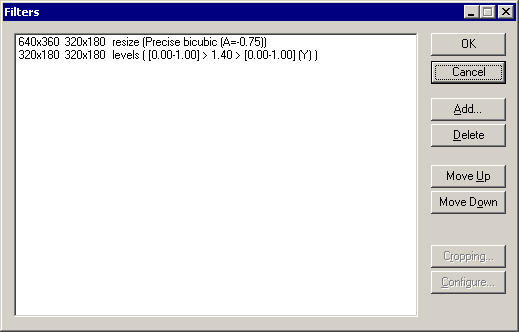

VirtualDub help - Dialogs: Video filters | |||||||
| On a crash... Dialogs: Video filtersVideo frame rate control Video color depth Video range Video compression Audio filters Audio interleaving Audio compression Audio conversion Audio volume Capture settings Capture preferences Capture volume meter Preferences |  Video filters transform video frames sequentially, such as blurring the image, resizing the image frame, or applying noise reduction. VirtualDub's video filter system takes chains of filters, which are set up through the Video Filters dialog.
| ||||||